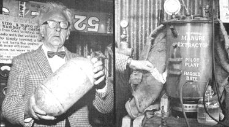

LEFT: Harold Bate holds pressure tank of home-made methane. RIGHT: Graphic proof that Harold's small pilot Manure Extractor does the job! Methane from the digester first bubbles into a gallon bottle of water and then passes to a small gas jet where it is easily ignited and supports a flame. Obviously, part of the methane generated by a large digester can be piped to a burner under the extractor for use in maintaining the tank at the optimum gas generating temperature.